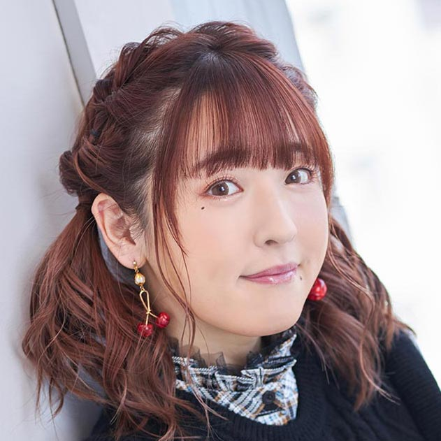

【声マガ・インタビュー】谷口 夢奈
TOPICS
PROFILE
アーツビジョンに所属する谷口夢奈さんは、大阪府出身の8月17日生まれ。『サークレット・プリンセス』（杉浦日和役）、『Code:Realize ～創世の姫君～』（エティ役）、『ロボットガールズZ』（グロマゼンR9役）等に出演。2019年10月放送の『あひるの空』では、七尾奈緒役で出演。
大ブームになるよりずっと前からタピオカにハマっていたという谷口さん。行ったことのない店を調べては足を運び、その数なんと、100軒を突破！ お店によってタピオカの大きさや、お茶の味が違い、飲み比べるのがとても楽しいそうです。パフェの食べ歩きも大好きで、日帰りで群馬まで行ったことも。「どちらもカロリーが高いから注意しないといけないんですけどね」と小声でこっそり照れ笑い。そんな谷口さんに、声優をめざしたきっかけや日本ナレーション演技研究所（以下、日ナレ）で学んだこと、今後の目標について語っていただきました。
日ナレのレッスン日がとっても楽しみでした
声優という仕事を意識したのはいつ頃ですか？
中学生の時、アニメ『ふしぎ遊戯』を観て、すごく感動したんです。人の死や愛の大切さが描かれたすごく深い作品で、今、改めて観ても泣けるんです。それまでもアニメは好きで観ていたんですが、この作品をきっかけに、声優さんにも興味を持つようになって、私もなりたい！ って思いました。
日ナレに通い始めたきっかけを教えてください。
とにかく早く声優になるための道に進みたくて、母に演技の勉強ができる高校に進学したいと相談しました。でも、「高校は普通科に通って」と言われてしまって。それなら高校を卒業したら専門学校に行こうと考えていた高校1年の時、アニメが好きな同級生に、高校生でも通える養成所があることを教えてもらったんです。それからいろいろ調べるうちに日ナレのことを知って、すぐに資料を取り寄せて、高校2年生の4月から通い始めました。
日ナレを選んだ理由を教えてください。
まず高校に通いながら学べるからです。あとは、リーズナブルだったので、親にお願いしやすかったことが決め手でした。
入所した頃の日ナレの印象について教えてください。
めちゃくちゃ楽しかったです！ 私は、結構人見知りするほうで、初日はドキドキだったんですが、頑張って話しやすそうな子に「おいくつですか？」って声をかけたり、自己紹介で同じアニメが好きって言っていた人に話しかけたり、ちょっとずつ友達を増やしていって。アニメや声優が好きという同じ趣味の人たちが集まっているから、会話もとても楽しくて、3週目くらいには、何人かとレッスン終わりでご飯を食べに行くようになっていました。初めの頃のレッスンは、お芝居を勉強するというよりも、自由に身体を動かしながら、笑ってみよう、大声で言ってみようっていう風に、リラックスして楽しみながら表現の仕方を学べたので、レッスンの日が毎週とっても楽しみでした。
基礎科で印象に残っていることはありますか？
声優の仕事って、マイクの前に立って演技するものだと思っていたので、まず発声や体を動かすことから始めると聞いて驚きました。あと、お芝居する時の声はナチュラルでいいと言われたことが衝撃でした。自分では意識していなかったんですが、可愛らしい声の声優さんに憧れていたので、真似してしゃべっていたみたいで、講師の方に「声を作るのはやめたほうがいい」って言われたんです。それからは自然なお芝居ってなんだろう、ナチュラルなお芝居ってなんだろうって、すごく考えるようになって、普段の生活でも話し方をすごく意識するようになりました。例えば、これも講師の方に教えていただいたことなんですが、テレビでお笑い番組を観て笑った時、自分の呼吸ってどうなっているんだろうとか、どういう声を出して笑っているのかを意識するんです。そうやって、自分の中に表現の引き出しを増やしていくようになりました。
その後、本科、研修科と進級されてからはいかがでしたか？
本科では舞台形式のレッスンが中心だったんですが、クラスメイトのみんなと舞台を作りあげるのは本当に楽しかったです。
そして研修科では、クラスメイトみんなでドラマCDのようなものを録って、マイク前での実践を学びました。声優になりたいと思った時から、声優の仕事を特集したテレビ番組を観たり、声優になるための本を読んだりしていたので、なんとなくわかっていたつもりでいたんですが、全くできなくて。最初の頃は、みんなで入れ替わりマイクに入るのが難しくて大変でした。
オーディションは落ちるもの
事務所に所属したのはいつですか？
本科の終わりに受けた所内オーディションに合格して、アーツビジョンに所属しました。
デビュー作品について教えてください。
事務所に所属してすぐ、初めて受けたオーディションで役をいただいたアニメ『ロボットガールズＺ』です。研修科でマイク前に立つレッスンを受ける前だったので、どうしたらいいのか全くわからなくて。事前にマネージャーに教えてもらい、現場では、事務所の先輩がずっと隣で教えてくださって。「私が初めての時よりできているから大丈夫だよ」とか「収録前でもご飯は食べてもいいんだよ」って優しく声をかけてくださったんですが、ご飯なんて喉を通らないほどガッチガチに緊張しちゃって、もう虫の息(笑)。とにかくパニックの中でのデビューでした。
緊張はどのくらいでしなくなりましたか？
未だに慣れないし、急に震えちゃったりします。でも最初の頃に比べたら、若干の度胸はついたかも。仕事を始めてすぐの頃は、とにかくわからないことが多すぎたので、マネージャーや先輩、日ナレの講師の方に、現場のルールや疑問点を聞きに行っていました。それから現場で事務所の先輩と一緒になった時は、ご挨拶に行った際に、「新人なので気になることがあったら言ってください」ってお願いして、ご指導いただいていました。「台本をめくるとき、音が出ていたから今後気をつけたほうがいいよ」など指摘してくださって、自分の失敗に気づくことができました。
その他、デビュー当時の作品で印象に残っているものはありますか？
デビュー2年目の年に出演したゲーム『白猫プロジェクト』は、自分の中で声優の仕事の楽しさを知る大きなきっかけになりました。女の子とドラゴン、ラスボスという３つのキャラクターを演じさせていただいたんですが、ドラゴンとかラスボスなんて、普通に生きていたらなれませんよね！ それで私なりに考えて演じ分けたら、その３役を同じ人がやっているって気づかなかった人もいたと聞いて、「よっしゃ！」って手ごたえも感じられて (笑)。この作品をきっかけに演じ分ける楽しさを知りました。それまで女の子の役が多かった私ですが、少年やセクシーなお姉さん、子ども向けアニメのマスコットなど、もっといろいろな役柄をやってみたいって、好奇心がどんどん湧いてきました。
デビューされてからこれまで、落ち込んだことはありますか？
いっぱいあります！ オーディションに落ちた時や、同時期に所属した人が私の受けたアニメにメインで出演すると聞いた時などは、やっぱり落ち込みます。マネージャーや先輩に相談しても、オーディションにはこうしたら絶対受かるという方法論があるわけではないし、後輩が入ってきて私は先輩になっていくのに、大丈夫なのだろうか、向いていないんじゃないかってますます不安が増して。もうわけがわからなくなって、一時はオーディションを受けたくない、事務所にも行きたくない、アニメを観るのもイヤって思っていた時期もありました。
どうやって乗り越えたんですか？
漫画を読みまくる、タピオカを飲みまくる、パフェを食べまくる！ あとは友達に話を聞いてもらったり、一人でカラオケに行ったり、プライベートで思いっきり好きなことをして発散していました。そうすると気持ちがちょっと楽になって、やっぱりやめられないという思いに、すぐに引き戻されるんです。特に大きかったのが、これまで演じてきたキャラクターを愛おしく思う気持ちです。例えば『白猫プロジェクト』でミレイユ、ペンタ、ミーチャを演じられるのは私しかいないじゃないって。その役を他の人が演じたとしたら、絶対悔しい思いをするし、嫉妬もするだろうし、だったらもうちょっと頑張ってみようって引き戻されるんです。
日ナレで学んだことで役に立ったことはありますか？
講師の方に「オーディションは落ちるもんだ。そんなに気にすることはない。次頑張ろうって前向きにいくほうがいいよ」って言われたことはよく思い出して、力にしています。オーディションに落ちても、自分の声がキャラクターに合っていなかったから落ちたんだ、きっと自分に合う役に出会えるから！ って気持ちを切り替えるようにしています。
元気や癒しを与えられる声優になりたい
ご自身が考える声優の仕事の魅力について教えてください。
自分が演じたキャラクターが人気ランキングの上位になったとスタッフさんから聞いた時は、本当に嬉しくなります。世の中にはたくさんキャラクターがいて、たくさん声優さんがいるけれど、そのキャラクターを演じられるのは世界に自分しかいないと思うようにしています。そう思うと、我が子みたいに愛おしく、全てが宝物に思えて、声優になれて良かったな、夢を追い続けて頑張ってきて良かったなってすごく思います。
今後、どんな声優になりたいですか？
自分で言うのも恥ずかしいんですが、私の声に癒された、元気をもらえた、だから作品を何回も観る……そんな風に言ってもらえるような存在になれたらいいなって思います。
そんな存在になるために、心がけていることはありますか？
テクニックより自分のあり方だと思っているので、常に心にゆとりを持って、どんなときでも明るく元気でいようって思っています。また、礼儀をちゃんとするとか、困っている人がいたら助けるとか、人として基本的なことを大事にすることも意識しています。そういうことって雰囲気で伝わるものだし、自然とにじみ出るものなのではないかと思うので。あとは、とにかく目の前の仕事を一つひとつ丁寧にやっていくのが私のポリシーです。
最後に声優をめざしている読者へメッセージをお願いします。
普段から自分の話し方を意識したほうがいいと思います。例えば、隣にいる人に話す時と、ちょっと離れたところにいる人に話す時って声のボリュームが違いますよね。内容によって、話し方も変わると思います。あと、映画やドラマを観て泣いた時、自分はどういう呼吸をしているのか、どういう声を出しているか。そういう一つひとつを自分の引き出しの中にしまっていく作業はすごく大事だと思います。声優をめざしている人はたくさんいるし、事務所に所属することも簡単ではありません。所属できたとしても落ち込むことはとっても多いです。事務所に入ってから苦労した時期が長かった私は、めざしている皆さんに、絶対大丈夫とは言えません。でも、いろいろな縁があって運があって、それをつかんでいくのは自分の頑張り次第です。皆さん、一緒に頑張りましょう！
プロフィール
谷口 夢奈
- 所属事務所
- アーツビジョン
主な出演歴
- あひるの空（七尾奈緒）
- サークレット・プリンセス（杉浦日和）
- ロボットガールズZ（グロマゼンR9）


{kind=link}
{kind=link}
{kind=link}
{kind=link}
{kind=link}
{kind=link}